1/28main-room-visitor-gazing-pink-light.jpg
orig: _94A3950-mid.jpg
| sv | Besökare i vit skjorta blickar upp mot rosa och lila lysande textilskulpturer i ANDETAGs huvudrum. |
| en | Visitor in a white shirt looking up at pink and violet luminous textile sculptures in the main room at ANDETAG. |
| de | Besucherin in weißem Hemd blickt zu rosa und violetten leuchtenden Textilskulpturen im Hauptraum von ANDETAG auf. |

2/28main-room-visitor-among-textile-sculptures.jpg
orig: _94A3958-mid.jpg
| sv | Besökare omgiven av lysande textilskulpturer i rosa och lila toner i ANDETAG. |
| en | Visitor surrounded by glowing textile sculptures in pink and violet tones at ANDETAG. |
| de | Besucherin, umgeben von leuchtenden Textilskulpturen in Rosa- und Violett-Tönen bei ANDETAG. |
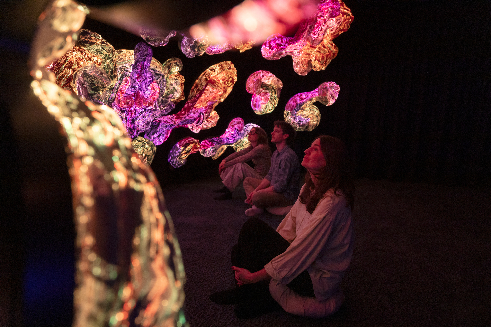
3/28main-room-three-visitors-warm-light.jpg
orig: _94A3961-mid.jpg
| sv | Tre besökare sitter på golvet och betraktar varma, lysande textilformer i ANDETAGs huvudrum. |
| en | Three visitors seated on the floor watching warm, glowing textile forms in the main room at ANDETAG. |
| de | Drei Besuchende sitzen am Boden und betrachten warme, leuchtende Textilformen im Hauptraum von ANDETAG. |
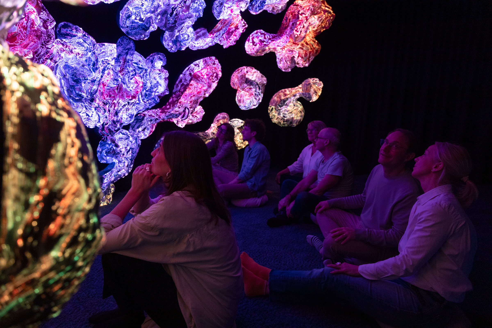
4/28main-room-group-reclining-purple-light.jpg
orig: _94A3969-mid.jpg
| sv | Grupp av besökare lutar sig bakåt mot lysande textilkonst i lila och blå toner. |
| en | A group of visitors leaning back toward luminous textile art in purple and blue tones. |
| de | Eine Gruppe von Besuchenden lehnt sich zurück und betrachtet leuchtende Textilkunst in Violett- und Blautönen. |

5/28main-room-group-seated-hands-clasped.jpg
orig: _94A3970-mid.jpg
| sv | Besökare sitter stilla med händerna vid hakan inför lysande textilskulpturer. |
| en | Visitors sitting still with hands clasped near their chins before glowing textile sculptures. |
| de | Besuchende sitzen still mit gefalteten Händen vor leuchtenden Textilskulpturen. |

6/28main-room-visitor-portrait-soft-glow.jpg
orig: _94A3973-mid.jpg
| sv | Närbild av leende besökare som blickar upp i ANDETAGs dämpade ljus. |
| en | Close-up of a smiling visitor looking upward in ANDETAG's dim glow. |
| de | Nahaufnahme einer lächelnden Besucherin, die im gedämpften Licht von ANDETAG nach oben blickt. |

7/28main-room-visitor-looking-up-warm-sculptures.jpg
orig: _94A3975-mid.jpg
| sv | Man i vit t-shirt sitter på golvet och blickar upp mot varma lysande textilskulpturer. |
| en | Man in a white t-shirt seated on the floor, looking up at warm luminous textile sculptures. |
| de | Mann in weißem T-Shirt sitzt am Boden und blickt zu warmen leuchtenden Textilskulpturen auf. |

8/28main-room-overhead-visitors-resting.jpg
orig: _94A3984-mid.jpg
| sv | Översikt där besökare vilar bland lysande textilkonst i ANDETAGs huvudrum. |
| en | Overhead view of visitors resting among luminous textile art in the main room at ANDETAG. |
| de | Überblick über Besuchende, die zwischen leuchtender Textilkunst im Hauptraum von ANDETAG ruhen. |

9/28main-room-visitor-profile-blue-sculptures.jpg
orig: _94A3989-mid.jpg
| sv | Besökare i profil badar i blått ljus från omgivande textilskulpturer. |
| en | Visitor in profile bathed in blue light from surrounding textile sculptures. |
| de | Besucher im Profil, in blaues Licht umliegender Textilskulpturen getaucht. |

10/28main-room-visitor-blue-glow-forms.jpg
orig: _94A3991-mid.jpg
| sv | Lugn besökare i blått ljus med lysande textilformer som svävar omkring. |
| en | Calm visitor in blue light, luminous textile forms floating around. |
| de | Ruhiger Besucher in blauem Licht, umgeben von schwebenden leuchtenden Textilformen. |

11/28main-room-wall-of-light-four-visitors.jpg
orig: _94A4012-mid.jpg
| sv | Fyra besökare sitter tillsammans framför en stor vägg av lysande textilskulpturer i ANDETAG. |
| en | Four visitors seated together before a large wall of luminous textile sculptures at ANDETAG. |
| de | Vier Besuchende sitzen zusammen vor einer großen Wand aus leuchtenden Textilskulpturen bei ANDETAG. |

12/28main-room-five-visitors-lying-ceiling-light.jpg
orig: _94A4018-mid.jpg
| sv | Fem besökare ligger ner på golvet och blickar upp mot ett tak av lysande textilkonst. |
| en | Five visitors lying on the floor looking up at a ceiling of luminous textile art. |
| de | Fünf Besuchende liegen am Boden und blicken zu einer Decke aus leuchtender Textilkunst hinauf. |

13/28main-room-visitors-on-pillows-suspended-art.jpg
orig: _94A4027-mid.jpg
| sv | Besökare vilar på kuddar under svävande, lysande textilskulpturer. |
| en | Visitors resting on pillows beneath floating, luminous textile sculptures. |
| de | Besuchende ruhen auf Kissen unter schwebenden, leuchtenden Textilskulpturen. |

14/28main-room-wide-hall-visitors-resting.jpg
orig: _94A4040-mid.jpg
| sv | Översikt av ANDETAGs huvudrum med besökare som ligger ner framför en lysande textilväggsinstallation. |
| en | Wide view of the main room at ANDETAG, visitors resting before a wall of breathing light art. |
| de | Weite Sicht in den Hauptraum von ANDETAG mit Besuchenden vor einer leuchtenden Textilwandinstallation. |

15/28main-room-hall-visitors-at-rest.jpg
orig: _94A4042-mid.jpg
| sv | Besökare vilar stilla i ANDETAGs huvudrum framför en vägg av lysande textilformer. |
| en | Visitors at rest in the main room at ANDETAG before a wall of luminous textile forms. |
| de | Besuchende ruhen im Hauptraum von ANDETAG vor einer Wand aus leuchtenden Textilformen. |

16/28corridor-lounge-illuminated-sculptures.jpg
orig: _94A4049-mid.jpg
| sv | Besökare samtalar i en korridor med orange fåtöljer och väggmonterade lysande textilskulpturer. |
| en | Visitors conversing in a corridor with orange armchairs and wall-mounted luminous textile sculptures. |
| de | Besuchende unterhalten sich in einem Gang mit orangefarbenen Sesseln und leuchtenden Textilskulpturen an den Wänden. |
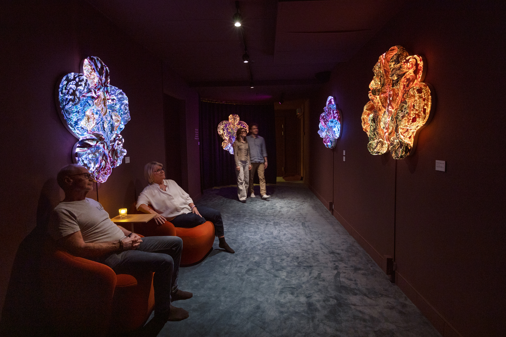
17/28corridor-visitors-walking-past-sculptures.jpg
orig: _94A4059-mid.jpg
| sv | Par går genom korridor med belysta textilverk i blått och rött på väggarna. |
| en | A couple walking through a corridor with blue and red illuminated textile works on the walls. |
| de | Ein Paar geht durch einen Gang mit blau und rot beleuchteten Textilwerken an den Wänden. |
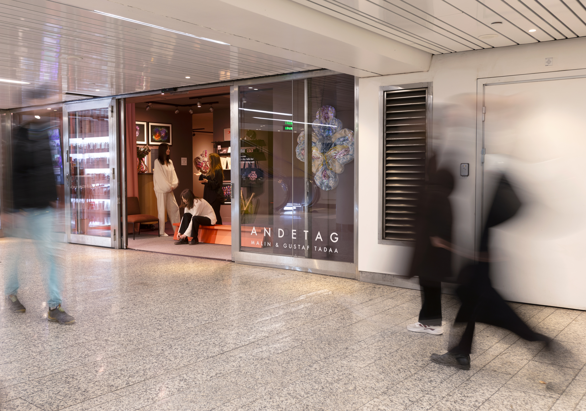
18/28entrance-storefront-passageway.jpg
orig: _94A4076-mid.jpg
| sv | Entrén till museet ANDETAG i en gångpassage med glasfasad och skylten ANDETAG Malin & Gustaf Tadaa. |
| en | The ANDETAG museum entrance in a pedestrian passage with glass facade and the sign ANDETAG Malin & Gustaf Tadaa. |
| de | Der Eingang zum ANDETAG-Museum in einer Fußgängerpassage mit Glasfassade und dem Schriftzug ANDETAG Malin & Gustaf Tadaa. |
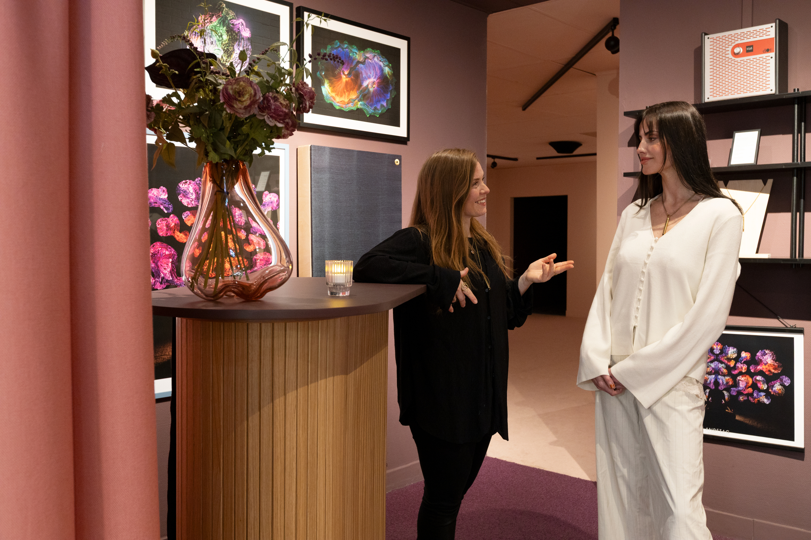
19/28reception-flowers-and-welcome.jpg
orig: _94A4086-mid.jpg
| sv | Värd i svart hälsar besökare vid en reception med en stor blombukett och inramade textilverk på väggen. |
| en | Host in black greeting a visitor at a reception with a large bouquet and framed textile works on the wall. |
| de | Gastgeberin in Schwarz begrüßt einen Gast am Empfang mit großem Blumenstrauß und gerahmten Textilwerken. |
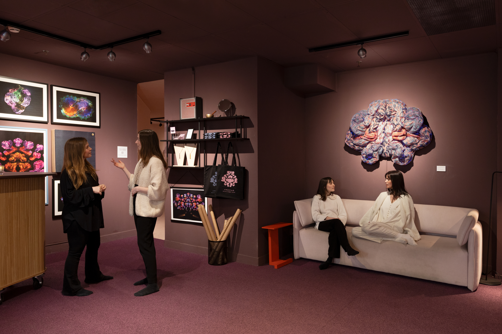
20/28reception-lobby-with-sculpture.jpg
orig: _94A4095-mid.jpg
| sv | Museets foajé med inramade textilverk, soffa med besökare och en stor väggskulptur i ANDETAG. |
| en | The museum lobby with framed textile works, a sofa with visitors, and a large wall sculpture at ANDETAG. |
| de | Das Museumsfoyer mit gerahmten Textilwerken, einem Sofa mit Besuchenden und einer großen Wandskulptur bei ANDETAG. |
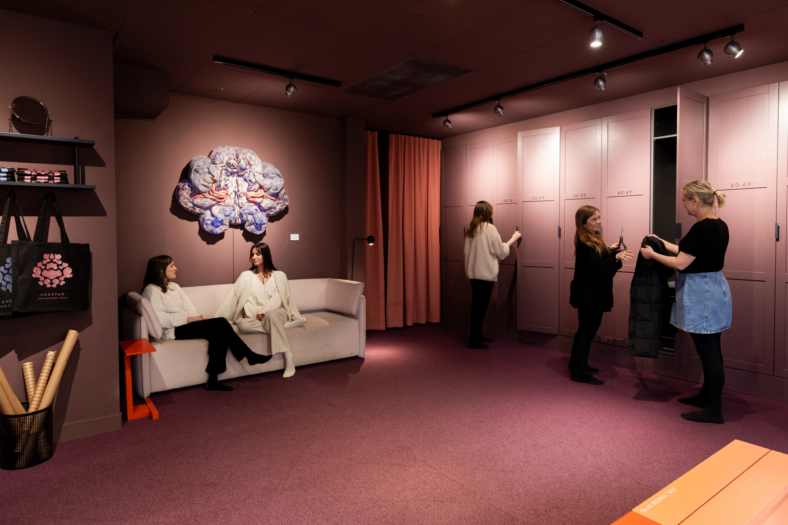
21/28lockers-visitors-preparing.jpg
orig: _94A4099-mid.jpg
| sv | Besökare lägger undan sina saker i rosa skåp bredvid en soffa och textilskulptur i ANDETAG. |
| en | Visitors storing their belongings in pink lockers next to a sofa and textile sculpture at ANDETAG. |
| de | Besuchende verstauen ihre Sachen in rosafarbenen Schließfächern neben Sofa und Textilskulptur bei ANDETAG. |
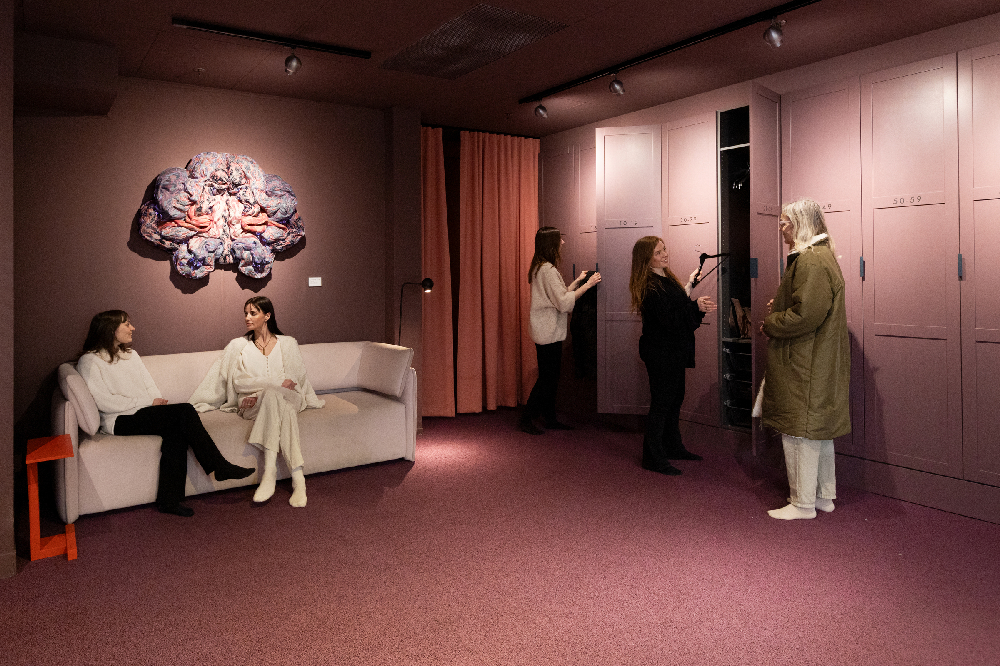
22/28lockers-guests-hanging-coats.jpg
orig: _94A4111-mid.jpg
| sv | Besökare hänger av sig rockar och packar ned saker i ANDETAGs rosa skåp inför huvudrummet. |
| en | Visitors hanging up coats and stowing belongings in ANDETAG's pink lockers before entering the main room. |
| de | Besuchende hängen Mäntel auf und verstauen Sachen in den rosafarbenen ANDETAG-Schließfächern vor dem Hauptraum. |
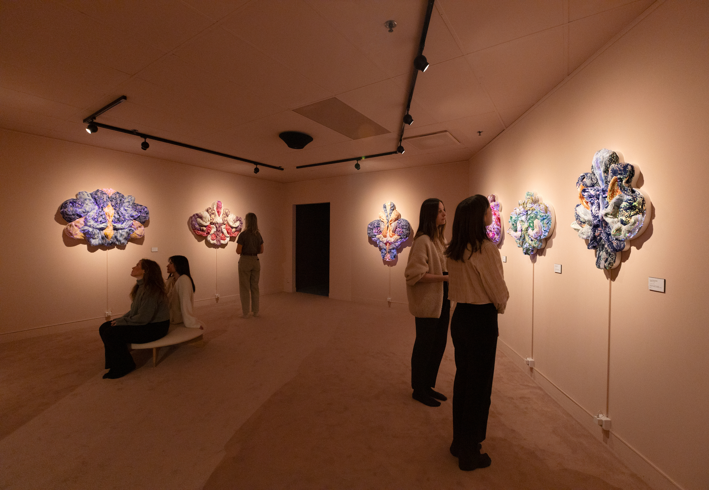
23/28gallery-visitors-among-sculptures.jpg
orig: _94A4128-mid.jpg
| sv | Besökare rör sig genom galleri med textila väggskulpturer upplysta av spotlights. |
| en | Visitors moving through a gallery with textile wall sculptures lit by spotlights. |
| de | Besuchende gehen durch eine Galerie mit textilen Wandskulpturen im Licht von Spotlights. |
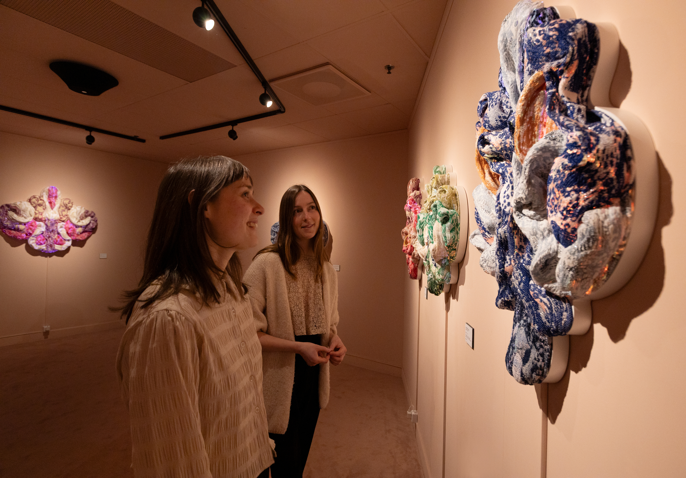
24/28gallery-two-visitors-studying-sculpture.jpg
orig: _94A4129-mid.jpg
| sv | Två besökare studerar en detaljerad textil väggskulptur i blått och orange. |
| en | Two visitors studying a detailed textile wall sculpture in blue and orange. |
| de | Zwei Besucherinnen betrachten eine detaillierte textile Wandskulptur in Blau und Orange. |
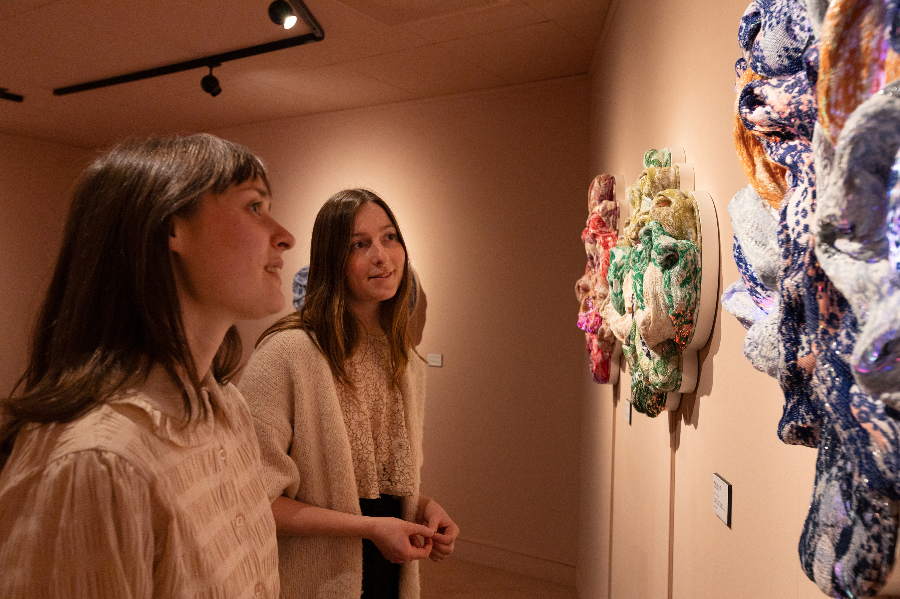
25/28gallery-visitors-close-up-textile-art.jpg
orig: _94A4131-mid.jpg
| sv | Närbild av två besökare i samtal framför textila skulpturer i ANDETAGs galleri. |
| en | Close-up of two visitors in conversation before textile sculptures in the ANDETAG gallery. |
| de | Nahaufnahme zweier Besucherinnen im Gespräch vor Textilskulpturen in der ANDETAG-Galerie. |
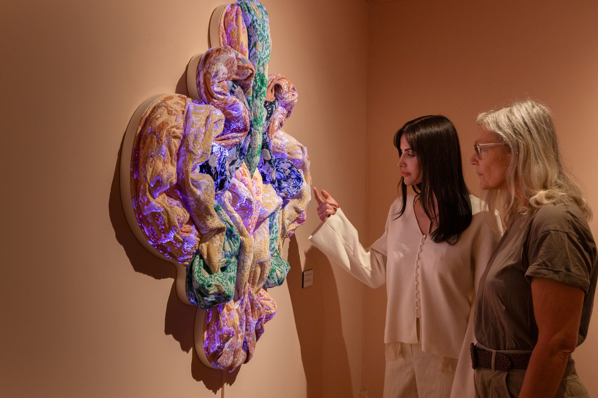
26/28gallery-visitors-admiring-iridescent-work.jpg
orig: _94A4138-mid.jpg
| sv | Två besökare betraktar en skimrande textilskulptur i lila, guld och grönt. |
| en | Two visitors contemplating a shimmering textile sculpture in violet, gold, and green. |
| de | Zwei Besucherinnen betrachten eine schimmernde Textilskulptur in Violett, Gold und Grün. |
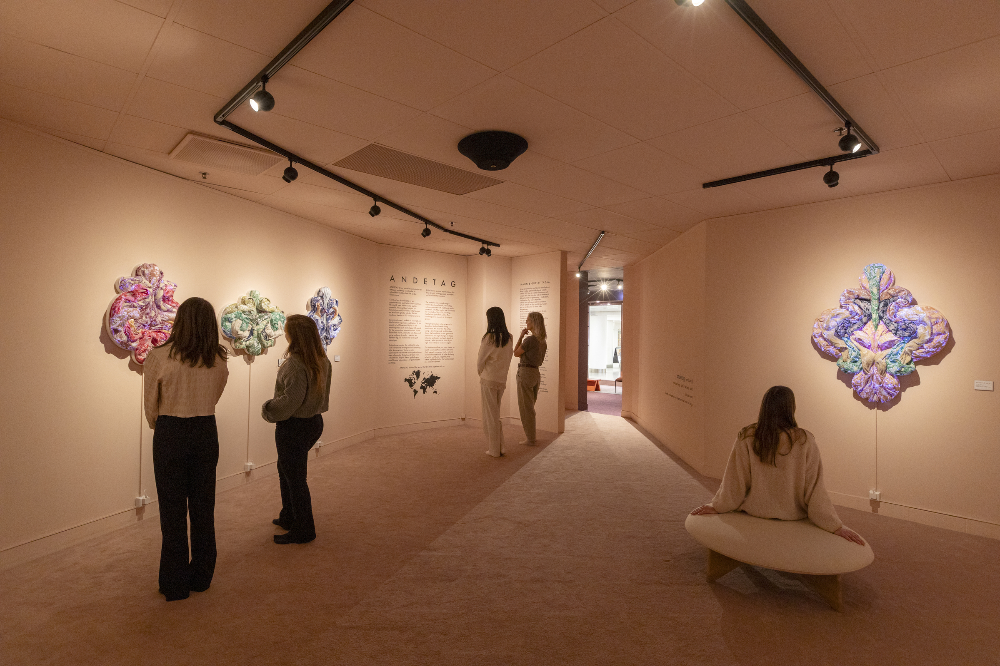
27/28gallery-info-panel-and-visitors.jpg
orig: _94A4146-mid.jpg
| sv | Utställningens galleri med ANDETAGs infotext på väggen och besökare som betraktar textilverk. |
| en | The exhibition gallery with the ANDETAG info panel on the wall and visitors viewing textile works. |
| de | Die Ausstellungsgalerie mit dem ANDETAG-Infoschild an der Wand und Besuchenden vor Textilwerken. |

28/28gallery-visitor-on-bench-contemplation.jpg
orig: _94A4151-mid.jpg
| sv | Besökare sitter ensam på en bänk och betraktar en textilskulptur på väggen. |
| en | A lone visitor sits on a bench, contemplating a textile sculpture on the wall. |
| de | Eine Besucherin sitzt allein auf einer Bank und betrachtet eine Textilskulptur an der Wand. |

29/48artwork-andetag-3-silhouette-contemplation.jpg
orig: Andetag 3.jpg · artwork: Andetag no. 3
| sv | Siluett av besökare framför två textilskulpturer som lyser i lila och magenta, verket Andetag no. 3. |
| en | Silhouette of a visitor before two textile sculptures glowing in violet and magenta light, the artwork Andetag no. 3. |
| de | Silhouette einer Besucherin vor zwei Textilskulpturen, die in violett und magenta leuchten, dem Werk Andetag no. 3. |

30/48artwork-andetag-9-floral-form.jpg
orig: Andetag 9-10.jpg · artwork: Andetag no. 9
| sv | Verket Andetag no. 9, blomlik textilskulptur i rosa, lila och blått, med besökare vid sidan. |
| en | The artwork Andetag no. 9, a flower-like textile sculpture in pink, purple, and blue, with a visitor beside it. |
| de | Das Werk Andetag no. 9, eine blütenartige Textilskulptur in Rosa, Violett und Blau, mit einer Besucherin daneben. |

31/48artwork-andetag-10-magenta-profile.jpg
orig: Andetag 10-53.jpg · artwork: Andetag no. 10
| sv | Verket Andetag no. 10 i magenta och lila toner, med en besökares profil i mjukt ljus. |
| en | The artwork Andetag no. 10 in magenta and violet tones, with a visitor's profile in soft light. |
| de | Das Werk Andetag no. 10 in Magenta- und Violett-Tönen, mit dem Profil einer Besucherin im weichen Licht. |

32/48artwork-andetag-10-multicolor-wall.jpg
orig: Andetag 10-66.jpg · artwork: Andetag no. 10
| sv | Verket Andetag no. 10 på en vit vägg, lysande i blått, rosa, gult och orange. |
| en | The artwork Andetag no. 10 on a white wall, glowing in blue, pink, yellow, and orange. |
| de | Das Werk Andetag no. 10 auf einer weißen Wand, leuchtend in Blau, Rosa, Gelb und Orange. |

33/48artwork-andetag-11-close-up-lace.jpg
orig: Andetag 11-88.jpg · artwork: Andetag no. 11
| sv | Närbild av verket Andetag nr 11, spetslika veck i optisk fibertextil i blått, lila och magenta. |
| en | Close-up of the artwork Andetag no. 11, lace-like folds in optical fibre textile in blue, violet, and magenta. |
| de | Nahaufnahme des Werks Andetag Nr. 11, spitzenartige Falten in optischer Fasertextilie in Blau, Violett und Magenta. |

34/48artwork-andetag-13-night-and-day.jpg
orig: Andetag 13-31-NIGHT-DAY.jpg · artwork: Andetag no. 13
| sv | Verket Andetag no. 13 i två stämningar: dagsljus till vänster, nattens lysande glöd till höger. |
| en | The artwork Andetag no. 13 in two moods: daylight on the left, luminous night glow on the right. |
| de | Das Werk Andetag no. 13 in zwei Stimmungen: Tageslicht links, leuchtendes Nachtglühen rechts. |

35/48artwork-andetag-13-detail-ruffle.jpg
orig: Andetag 13-35.jpg · artwork: Andetag no. 13
| sv | Detalj av verket Andetag nr 13, skimrande veck i optisk fibertextil i rosa, lila, grönt och silver. |
| en | Detail of the artwork Andetag no. 13, shimmering optical fibre textile folds in pink, violet, green, and silver. |
| de | Detail des Werks Andetag Nr. 13, schimmernde Falten in optischer Fasertextilie in Rosa, Violett, Grün und Silber. |

36/48artwork-andetag-13-silhouette-profile.jpg
orig: Andetag 13-90.jpg · artwork: Andetag no. 13
| sv | Verket Andetag no. 13 i blått, turkos och rosa ljus, med en besökares silhuettprofil. |
| en | The artwork Andetag no. 13 in blue, turquoise, and pink light, with a visitor's silhouetted profile. |
| de | Das Werk Andetag no. 13 in blauem, türkisem und rosafarbenem Licht mit der Silhouette einer Besucherin im Profil. |

37/48artwork-andetag-16-hand-close-up.jpg
orig: Andetag 16-049.jpg · artwork: Andetag no. 16
| sv | Närbild där en hand pekar mot verket Andetag nr 16, grönt och silver skimrande optisk fibertextil. |
| en | Close-up with a hand pointing toward the artwork Andetag no. 16, green and silver shimmering optical fibre textile. |
| de | Nahaufnahme mit einer Hand, die zum Werk Andetag Nr. 16 zeigt, grün und silbern schimmernde optische Fasertextilie. |

38/48artwork-andetag-19-hand-reaching.jpg
orig: Andetag 19-508.jpg · artwork: Andetag no. 19
| sv | Verket Andetag no. 19 svävar i mörkret; en hand sträcker sig in i textilformen i flerfärgat ljus. |
| en | The artwork Andetag no. 19 floats in darkness; a hand reaches into the textile form in multicolored light. |
| de | Das Werk Andetag no. 19 schwebt im Dunkel; eine Hand greift in die textile Form in mehrfarbigem Licht. |

39/48artwork-andetag-19-leopard-detail.jpg
orig: Andetag 19-508-2.jpg · artwork: Andetag no. 19
| sv | Hand rör vid verket Andetag no. 19 i orange och lila ljus mot textil med oregelbundet fläckmönster. |
| en | A hand touching the artwork Andetag no. 19 in orange and violet light on textile with an irregular speckled surface. |
| de | Eine Hand berührt das Werk Andetag no. 19 in orangefarbenem und violettem Licht an Textilie mit unregelmäßigem Fleckenmuster. |

40/48artwork-andetag-21-portrait-woman.jpg
orig: Andetag 21-407.jpg · artwork: Andetag no. 21
| sv | Kvinna i profil bredvid verket Andetag no. 21 i rosa och lila spetsmönster. |
| en | Woman in profile beside the artwork Andetag no. 21 in pink and violet lace patterns. |
| de | Frau im Profil neben dem Werk Andetag no. 21 in rosa und violetten Spitzenmustern. |
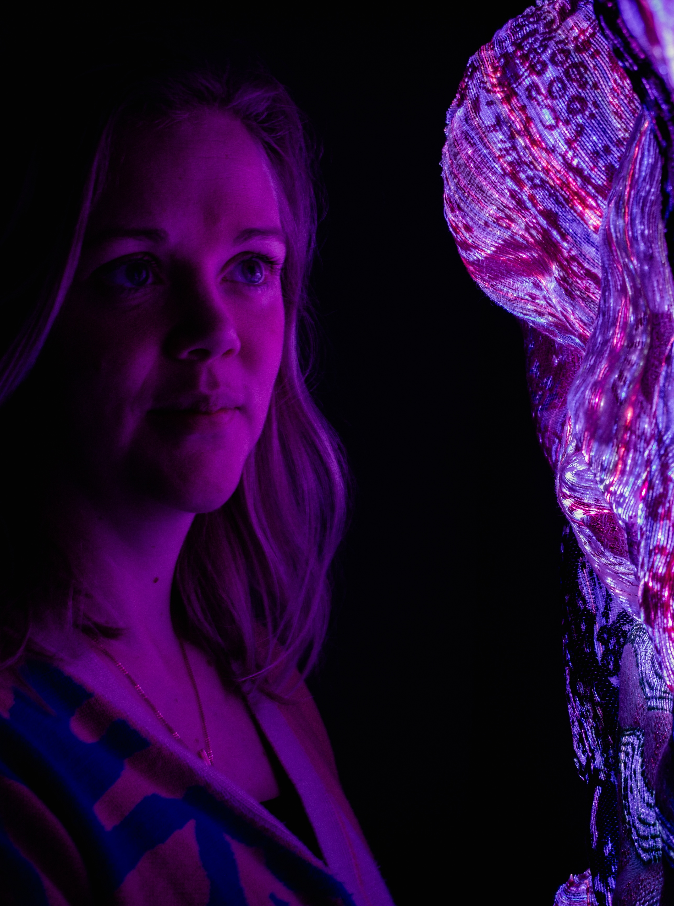
41/48artwork-andetag-21-portrait-tall.jpg
orig: Andetag 21-407-tall.jpg · artwork: Andetag no. 21
| sv | Porträttformat av kvinna bredvid verket Andetag no. 21, upplyst i rosa och lila. |
| en | Portrait-format shot of a woman beside the artwork Andetag no. 21, lit in pink and violet. |
| de | Hochformat-Aufnahme einer Frau neben dem Werk Andetag no. 21, in Rosa und Violett beleuchtet. |

42/48artwork-andetag-30-mirrored-pair-square.jpg
orig: Andetag 30-47-square.jpg · artwork: Andetag no. 30
| sv | Verket Andetag no. 30 i spegelvänd form, rosa och blått ljus över textilskulpturer med besökares siluett, kvadratiskt format. |
| en | The artwork Andetag no. 30 mirrored, pink and blue light across textile sculptures with a visitor's silhouette, square format. |
| de | Das Werk Andetag no. 30 gespiegelt, rosa und blaues Licht auf Textilskulpturen mit der Silhouette einer Besucherin, quadratisches Format. |

43/48artwork-andetag-30-close-up-swirls.jpg
orig: Andetag 30-60.jpg · artwork: Andetag no. 30
| sv | Närbild av verket Andetag nr 30, virvlande veck i optisk fibertextil i magenta, rosa, blått och orange. |
| en | Close-up of the artwork Andetag no. 30, swirling optical fibre textile folds in magenta, pink, blue, and orange. |
| de | Nahaufnahme des Werks Andetag Nr. 30, wirbelnde Falten in optischer Fasertextilie in Magenta, Rosa, Blau und Orange. |
44/48seasonal-christmas-bauble-pine.jpg
orig: Andetag Christmas.jpg
| sv | Julgranskula i glas hänger från granris bland röda och gröna oskärpa ljus. |
| en | Glass Christmas bauble hanging from a pine branch among blurred red and green lights. |
| de | Gläserne Christbaumkugel an einem Tannenzweig vor verschwommenen roten und grünen Lichtern. |
45/48seasonal-christmas-baubles-wide.jpg
orig: Andetag Christmas 2.jpg
| sv | Två julgranskulor i glas hänger från granris, brett format mot röd och grön bakgrund. |
| en | Two glass Christmas baubles hanging from pine branches, wide format against red and green bokeh. |
| de | Zwei gläserne Christbaumkugeln an Tannenzweigen, Breitformat vor rot-grünem Bokeh. |

46/48seasonal-christmas-bauble-andetag-glow.jpg
orig: Andetag Christmas 3.jpg
| sv | Julkulor i glas hänger från gran med ett lila Andetag-verk som glöder i bakgrunden. |
| en | Glass Christmas baubles hanging from pine with a violet Andetag artwork glowing in the background. |
| de | Gläserne Christbaumkugeln an Tannenzweigen mit einem violett leuchtenden Andetag-Werk im Hintergrund. |
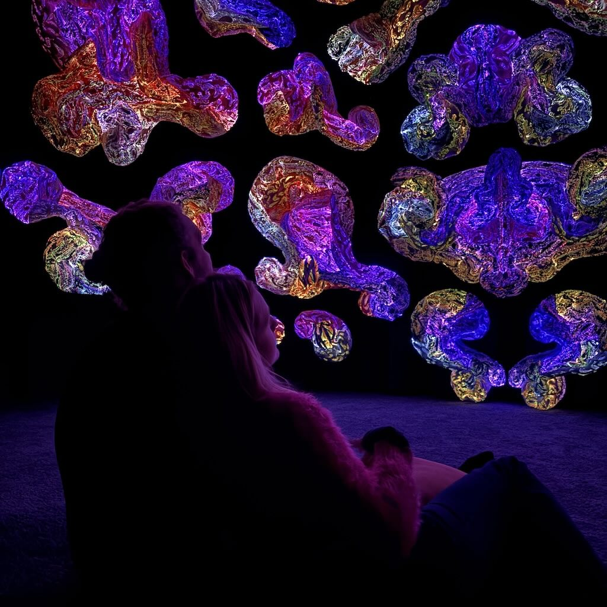
47/48theme-date-couple-silhouette.jpg
orig: Andetag date.jpeg
| sv | Par i silhuett sitter tätt intill varandra framför lysande textilskulpturer i ANDETAGs huvudrum. |
| en | A couple in silhouette sitting close together before luminous textile sculptures in the main room at ANDETAG. |
| de | Ein Paar in Silhouette sitzt eng beieinander vor leuchtenden Textilskulpturen im Hauptraum von ANDETAG. |
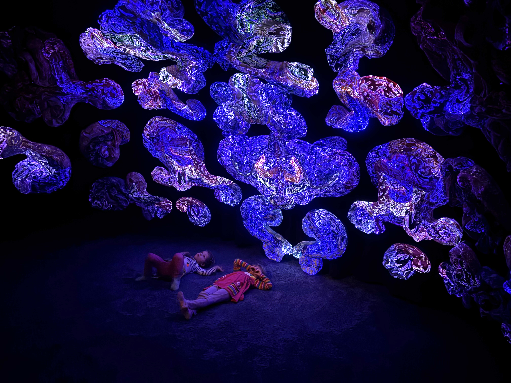
48/48theme-kids-lying-among-sculptures.jpg
orig: Andetag kids.jpeg
| sv | Två barn ligger på golvet omgivna av stora Andetag-skulpturer i blått och lila ljus. |
| en | Two children lying on the floor surrounded by large Andetag sculptures in blue and violet light. |
| de | Zwei Kinder liegen auf dem Boden, umgeben von großen Andetag-Skulpturen in blauem und violettem Licht. |